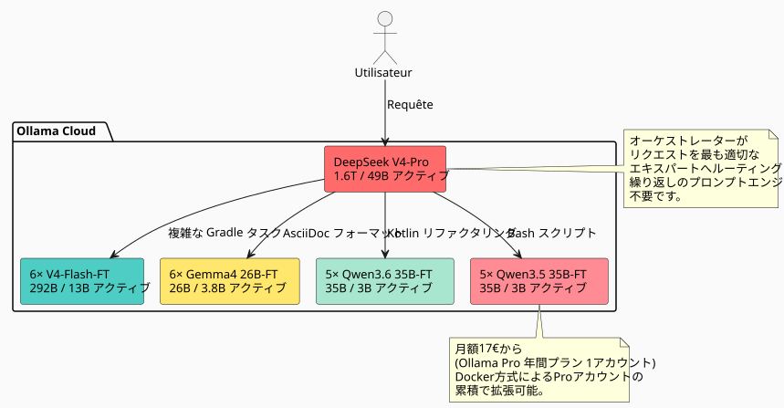

ClaudeやGPTより27倍から45倍効率的：ファインチューニングされた23人のAIエキスパート艦隊がいかにして市場を圧倒するか
公開日: 11 May 2026
日常的にソフトウェア開発でLLMを使うと、いつも同じ壁にぶつかることになります：モデルは*あなたの*コードベースを知りません。それはあなたがそのようなパターンを使っていることを知らないhttps://fr.wikipedia.org/wiki/Graphe_orient%C3%A9_acyclique[DAG], そのような Gradle の慣習, そのような認識論的層構造 あなたのhttps://fr.wikipedia.org/wiki/AsciiDoc[.adoc]. それから彼にコンテキストを注入し、繰り返し、修正し、反復する。そして時間―そしてお金―が過ぎていく。
だから私は率直に質問した：私のワークスペースでファインチューニングされたモデルのチームを作るにはどれくらいのコストがかかるだろうか、*私のスタイル*でコードを出力でき、毎回説明する必要なく動くチームは。特に：このアプローチは、Claude、GPT、Gemini、Grokなどの従来の propietary ソリューションとどう比べられるだろうか？
返答に驚いた。私が想像していたよりもはるかに少なかった。そして、業界の巨人たちと比較したコストパフォーマンスの比率はとんでもない。詳細は以下の通りです。
問題：なぜファインチューンではなくRAGを使わないのか？
RAGは良いです。私のナレッジグラフと私の認識の区画化は機能しています。しかし、RAGには根本的な欠点があります：各クエリごとに、関連するコンテキストを再注入しなければなりません。あなたのプロンプトは伸び、遅延は爆発し、モデルは決してあなたのパターンを*内面化*せず—常に外部のドキュメントとして読み取ります。
ファインチューンこそが筋肉の記憶です。モデルは*知っている*が、君は書いている`build.gradle.kts`記録されたタスクを介して`tasks.register`, あなたの`AGENTS.adoc`標準的な構文に従い、あなたのワークスペースはboroughsに構造化されている。彼には思い出させる必要はない。
|
ファインチューニングはRAGの代替ではありません。これは補完的なレイヤーです。RAGは頻繁に変化するデータ（ログ、チケット、最近のコミットなど）に対して依然として関連があります。ファインチューニングは長期的な構造的かつスタイル的な知識のために用いられます。 |
考え: 専門家の艦隊、単一のモデルではない
ワークスペース全体に対して1つだけファインチューニングされたモデルでもそれはまあまあ良いです。しかしそれは最適ではありません。私のワークスペースは非常に異なる分野をカバーしています ：
-
Gradleプラグイン(Kotlin、規約プラグイン、複合ビルド)
-
DAGエンジン (Kotlin, スケジューリング, 実行)
-
LLMエージェント (Python, LangChain4j, RAG)
-
アーキテクチャドキュメント (AsciiDoc, ガバナンス)
-
インフラ/DevOps（Docker、GitHub Actions、CI/CD）
単一のモデルはどこでもそれなりに良いが、どこでも優れているわけではない。解決策？一つ専門モデルの艦隊、オーケストレーターが各リクエストを適切なエキスパートにルーティングします

総艦隊：1 オーケストレータ + 22 エキスパート = 23 モデルそして、月間の推論コストはいくらですか？17ユーロ/月Ollama Pro年間サブスクリプション — クォータを超過した場合はアカウントの累積により拡張可能で、これは Dockerマルチアカウント方法 で示されています。基本料金は17ユーロからで、実際のニーズに応じて段階ごとに20ユーロずつ追加します。無駄はありません。
�拡大鏡で見たコードベース : 7 900 ファイル、144 000 行
トレーニングのコストを見積もる前に、何をトレーニングすべきかを知る必要があります。私は、Gitによって無視されるものを厳密に除外して、ワークスペースを監査しました。
----
----
----
build/ out/ node_modules/ runtimes/ .gradle/ dist/
target/ venv/ __pycache__/ .cache/ .tox/
----
以下は、追跡されているファイルのみの結果です：
[cols="2,2"]
|===
|メトリック |値
|追跡されたソースファイル |**7 896** |コード行数(LOC) |**百四十三千八百五** |Git リポジトリ |**二十六** |主要な言語 |Kotlin (1 903), AsciiDoc (2 765), Python (5 029)
|===
[IMPORTANT]
====
これらの5,000+のPythonファイルには`runtimes/`ノートブックとユーティリティスクリプト。アプリケーションのコア（Gradleプラグイン、DAGエンジン、エージェント）は主にKotlinとAsciiDocで書かれています。
====
私はこの質量から合成データセットを生成できると推定します**約1億7000万トークン**インストラクターLLMを経由して (コードベースを命令/応答ペアに蒸留する).
=== 専門家タイプ別のデータセットの詳細
[source,text]
----
Dataset maître (généraliste V4-Flash) : 50M tokens
Expert Gradle/Build : 15M tokens
Expert Kotlin/DAG : 15M tokens
Expert AsciiDoc/Gouvernance: 15M tokens
Expert Agent/LLM/Python : 15M tokens
Expert Infra/CI-CD : 15M tokens
Micro-experts Qwen/Gemma : ~5M tokens chacun
----
== モデルの選択 : 100% MoE, ゼロ dense
そこに建築が本当に効率的になります。
*dense* モデルは、各トークンで全ての重みをアクティベートします。*MoE* (Mixture of Experts) モデルは、そのパラメータの一部のみをアクティベートします。推論およびファインチューニングのコストは、パラメータ数に比例します。**有効**, パラメータには適用されません**保存された**。
Ollama Cloudでは、今日市場がMoE向けに提供しているものを見てみましょう：
[cols="3,2,2,1,3"]
|===
|モデル |総パラメータ数 |活性化された |活性化 |Ollama クラウド
|DeepSeek V4-Pro |1.6T |49B |3.1% |ネイティブ |ディープシーク V4-Flash |292B |13B |4.5% |�✅ ネイティブ |Gemma 4 26B-A4B |26B |38億 |14.6% |�✅ ネイティブ |Qwen3.6-35B-A3B |35B |3B |8.6% |❌ (まだ統合されていません) |Qwen3.5-35B-A3B |35B |3B |8.6% |�✅ ネイティブ
|�❌ Qwen3.5-27B |27B |27B |100%濃密 |排除された |❌ Qwen3.5-4B/9B |4B/9B |4B/9B |100％濃密 |除去された |�❌ Gemma 4 31B |31B |31B |100% 密集 |除去された
|�🧪 Gemma 4 E2B/E4B |5B/8B |5B/8B |100% 密集している |バリデーションパイプライン
|===
[CAUTION]
====
アクティベーション比率が判別基準です。Gemma 4 26B-A4Bは26Bのパラメータのうち3.8Bのみをアクティベートします — これは密な27Bの7倍少なく、コーディングエージェントの性能が同等です（LiveCodeBench v6で77.1%対80%）。
====
=== なぜ私が密なモデルをやめるのか
例外：Gemma 4 E2B と E4B。これらの2つのモデルは Apache 2.0 ライセンスで、コストを抑えてトレーニングパイプラインをテストおよび検証するのに最適です。E2B での 2-3 時間の実行は $5 未満のコストです。データセットまたはハイパーパラメータに問題がある場合、わずか数ドルでそれを知ることができます。パイプラインが整ったら、超マイクロタスク（単純な再フォーマット、二値分類）にも使用できます。しかし、メインフリートのエキスパートについては、私は MoE を使い続けます。なぜかというと：
。しかしそれだけじゃない：Gemma 4 E2B/E4Bは、細やかな匿名化の専門家だ
[NOTE]
====
Google はこれらの小さなモデルをネイティブなツール呼び出しにおいて競争力があるように設計しました — 彼らは関数を呼び出し、正規表現を操作し、パターンを検索することができます。匿名化の例（メール、トークン、UUID、ファイルパス）でファインチューニングすると、彼らは**データセットの匿名化ツール**超高速。 彼らは生テキストのブロックを与え、彼らは呼ぶ`sed`(No text to translate, so output empty)`regex`via ツールコール を呼び出し、クリーンなブロックを返却します。推論コストは微々たるものです：5B がアクティベートされ、エントリーレベルのシングル GPU で十分です。これらのモデルは業界の専門家ではありません — それらは**熟練労働者**データセットの生産チェーンの中
====
* そのトレーニング用VRAM（QLoRAでも）は、それに比例する**27B 合計**
* 彼のトレーニング時間は、に比例する**27B が有効**
Qwen3.6-35B-A3B (MoE) と比較してみましょう：
[cols="3,2,2,2"]
|===
| |Qwen3.5-27B (dense) |Qwen3.6-35B-A3B (MoE) |比率
|VRAM QLoRA |~55 GB |~35 GB |1.6× |GPU時間 (8M トークン) |約12時 |約4時間 |**3×** |ファインチューンあたりのコスト |~$24 |~$8 |**3×** |SWE-bench Verified |75.0% |73.4% |比較可能
|===
MoEはエージェントコーディングの性能を5%程度で、訓練コストが3倍少なくなります。22人の専門家の間で、差額は数千ユーロに上ります。
== トレーニングの見積もり: 811 H100時間
QLoRA 4-bit でモデルごとのトレーニングコストを、前述のデータセットに基づいて内訳した。
=== �軽量なマイクロエキスパートMoE(3-3.8B活性化された)
これらのモデルは、実行ごとに H100 (80 GB) が 1 つ必要です。 Q4 のモデルの VRAM は約 13–18 GB であり、LoRA オプティマイザー状態およびアクティベーション用に十分な余裕があります。
[cols="4,2,3,2"]
|===
|モデル |実行回数 |GPU時間/実行 |合計 GPU時間
|Gemma 4 26B-A4B-FT |6 |3.5 h |**21時** |Qwen3.6-35B-A3B-FT |5 |4.0 h |**20 時間** |Qwen3.5-35B-A3B-FT |5 |4.0 h |**20時** |マイクロ 小計 | | |*61 h*
|===
=== V4-Flash エグゼクティブ (13B 有効 / 292B 保存)
DeepSeek V4-Flashは特別なケースです。トークンあたり13Bしかアクティベートされませんが、Q4のフルモデルは約142 GBあります — トレーニング中はすべてのエキスパートがVRAMに存在する必要があります。したがって**3× H100**走ることによって快適になるため
[cols="4,2,3,3,2"]
|===
|モデル |データセット |GPU |時間 |合計GPU時間
|V4-Flash-Base 汎用 |50M トク |3× H100 |50 h |**150 時間** |V4-Flash エキスパート ×5 |15M トークン |3× H100 |40 h |**600時間** |*幹部小計* | | | |*750 h*
|===
[cols="3,2,1"]
|===
|**合計** | |**811 H100-h**
|===
[NOTE]
====
比較として、QLoRAなし（すべての重み）でV4-Flashをフルファインチューンすると、6モデルだけで約4 000 H100時間かかる。QLoRAはコストを5分の1に削減する。これがこの規模でプロジェクトを経済的に実行可能にする唯一の方法である。
====
=== GPUの料金：2026年5月に誰が何を借りているか
私は主要なH100レンタル業者をベンチマークしました。メーター価格、811時間分。
[cols="3,2,2,2"]
|===
|�貸主 |$/H100·h |合計 811時間 |信頼性
|**Vast.ai スポット** |$1.60 |**$1,298** |★★☆ 中断可能 |**クルーソー クラウド** |$2.00 |**$1 622** |★★★★ 信頼できるデータセンター |FluidStack |$1.98 |$1 606 |★★★ |TensorDock |$1.80 |$1 460 |★★☆ |RunPod |$2.29 |$1 857 |★★★ 良い妥協 |CoreWeave |$2.25 |$1 825 |★★★★ 企業 |ラムダ・ラボ |$2.49 |$2 019 |★★★★ プレミアム
|===
[TIP]
====
Vast.ai のスポットは最も安いですが、実行はいつでも中断される可能性があります。トレーニングにはリスクがあります。Crusoe は $2.00/h で、信頼性と価格のバランスが最も良いです。Vast と比較した $324 の追加コストは、心の平穏に値します。
====
=== Wall-clock : すべてをトレーニングするのにどのくらい時間がかかりますか？
単一の3× H100ノードでは、31回の実行（汎用1 + エキスパート30）は約**12日間**シーケンシャルで。 もしノードを2つ並列で借りると、それに落ちる**6日**。
実際には、マイクロエキスパートは個別のノード（それぞれ1つのH100）で稼働し、その間にV4‑Flashが3×H100のノードを占有します。賢いスケジューリングを用いると：
----
Nœud A (3× H100) : V4-Flash généraliste → V4-Flash experts ×5 (11 jours) Nœud B (1× H100) : Gemma 4 26B ×6 → Qwen 36 ×5 → Qwen 35 ×5 (6 jours)
7日間のレンタル、すべて折りたたみ。
== 推論: Ollama Cloud で 23 のモデルが月額 17 ユーロから
これは建築で最もエレガントな部分です。
Ollama Cloud はプライベートモデルをアップロードすることができます（Pro プランの機能）。私の22個のファインチューニング済みモデルは、…にプッシュされます`.gguf`私の Ollama スペースで、プライベートとしてマークされ、標準 API を介してアクセス可能です。
[plantuml, inference-flow, svg]
----
@startuml
skinparam backgroundColor #FAFAFA
skinparam defaultFontSize 12
|Utilisateur|
start
:Tâche de développement;
|Orkestrateur (V4-Pro)|
:Classifier la tâche\n(domaine + complexité);
if (Tâche simple,\nspécialisée ?) then (oui)
:Router vers micro-expert\n(Gemma 4 26B-A4B-FT\n ou Qwen3.6-35B-A3B-FT);
elseif (Tâche complexe,\nconventions fortes ?) then (oui)
:Router vers exécutif\n(V4-Flash-FT);
else (non)
:Résoudre avec V4-Pro\n(architecture, décision);
endif
|Modèle ciblé|
:Génère le code/output\n**dans mon style**,\n90%+ first-shot correct;
:Retourne la réponse;
stop
@enduml
----
=== 17€/月から始め、必要に応じてスケールします。
Ollama Proプラン（年間17€/月）は3つの競合クラウドモデルを許可します。このアーキテクチャでは、同時に2～3人の専門家以上が必要になることは決してありません：
* 分類フェーズ (V4-Pro) は 1 スロットを占有し、数秒かかります
* 対象のエキスパートは1スロットを占有し、応答を生成するのに時間がかかる
* 3番目のスロットは並列タスク用に予備として残されます
使用量が増えると、Docker方法で説明されているように、xref:0120_cumuler_deux_abonnements_ollama_pro_docker_post.adoc[私の記事（サブスクリプションの併用について）] で追加のProアカウントを追加します。月額100ユーロのMaxプランはありません — 本当に必要なものだけを追加します。
唯一の制限要因は**GPU時間のクォータ**Ollamaの月額（プロ向け無料プランの50倍）。私の1日数百回の利用では十分です。
[IMPORTANT]
====
V4-Pro (49B が有効) と Gemma 4 26B-A4B (3.8B が有効) の呼び出しのマージナルコストは**私にとってもゼロ**. これは Ollama のプランがコンピュートの差を吸収しています。私の唯一の指標はレイテンシです。
====
=== 実践におけるルーティング
----
Volume de requêtes estimé : ~500/jour
├─ 50% → Gemma 4 26B-A4B-FT (micro, 3.8B actifs) │ Formatage AsciiDoc, scripts simples, conventions nommage │ ├─ 25% → V4-Flash-FT (exécutif, 13B actifs) │ Plugins Gradle, refactoring Kotlin, génération DAG │ ├─ 15% → Qwen 35B MoE-FT (micro, 3B actifs) │ Tâches intermédiaires, review de code, documentation │ └─ 10% → V4-Pro (orkestrateur, 49B actifs) Décisions architecturales, refactoring transverse, problèmes vraiment nouveaux
トラフィックの大部分は小規模なものによって処理されます。大規模モデルは最後の手段としてのみ介入します。
== 痛い比較：Claude, GPT, Gemini, Grok vs 私の艦隊
ここで差がとんでもなく広がります。同じ作業量（1日あたり500リクエスト、平均で入力約300トークン＋出力2,000トークン）のコストが、2026年5月の市場のプロプライエタリーソリューションではどれくらいか見てみましょう。
=== Anthropic — Claude (2026年5月料金)
Anthropic は最近、価格を*引き下げ*ました。DeepSeek や Qwen のようなオープンウェイト ソリューションによるプレッシャーが感じられます。
[cols="3,2,2,2,2"]
|===
|モデル |$/MTok |$/MTok |1日あたりのコスト |**月額**
|Opus 4.7 (最も賢い) |$5 |$25 |$25.75 |**$772** |ソネット 4.6 (バランス) |$3 |$15 |$15.45 |**$463** |Haiku 4.5 (より高速) |$1 |$5 |$5.15 |**154ドル**
|===
[CAUTION]
====
これらの料金は *après* アンソロピックの最後の値下げ (2026年5月) の後です。それ以前、OpusはMTokあたり$15/$75でした。オープンウェイトへの恐れは現実です。
====
Claudeでも最も安いモデル — Haiku 4.5 へ**154ユーロ/月**— Ollama Pro のサブスクリプション（17ユーロ）の9倍以上かかる。 Haikuは私のコードベースを知らず、私のスタイルで生成せず、体系的なプロンプトエンジニアリングを必要とする。
最も賢い — Opus 4.7 — 予算を爆発させる**772ユーロ/月**1日あたり500件という少量のクエリに対して。あるいは**45倍高い**私の解決策より
=== OpenAI — GPT (料金 2026年5月)
[cols="3,2,2,2,2"]
|===
|モデル |$/MTok |$/Tok |1日あたりのコスト |**月�額費用**
|GPT 5.5 (最も賢い) |$5 |$30 |$30.90 |**$927** |GPT 5.4 (標準) |$2.50 |$15 |$15.45 |**$463** |GPT 5.4 ミニ |$0.75 |$4.50 |$4.64 |**139ドル**
|===
OpenAIの『経済的』モデル — GPT 5.4 Mini 月額139ユーロ — でも、私のサブスクリプションの8倍のコストがかかります。それは私の慣習について*何も*知らないモデルであり、重いプロンプトエンジニアリングが必要です。
GPT 5.5、彼らのフラッグシップ：**927ユーロ/月**. *ゼロショット* を使うために。 スタイルが習熟していないため、タスクあたり2-3回の反復が必要で、実際の月間コストが簡単に倍増します。
=== Google — Gemini (2026年5月料金)
[cols="3,2,2,2,2"]
|===
|モデル |$/MTok |$/MTok |コスト/日 |**月額コスト**
|Gemini 3.1 Pro (High) |$3.50 |$17.50 |$18.00 |**$540** |Gemini 3.1 Pro |$2 |$10 |$10.30 |**309ドル** |ジェミニ 3 フラッシュ |$0.30 |$1.50 |$1.54 |**$46**
|===
Gemini 3 Flash は月額46ユーロで価格面で競争力があります — しかしファインチューニングがなければ、汎用的なコードを生成します。*Cheroliv* コードではありません。
=== Grok — xAI (2026年5月の料金)
[cols="3,2,2,2,2"]
|===
|モデル |$/MTok |$/MTok |コスト/日 |**費用/月**
|Grok 4 |$4 |$16 |$16.48 |**494ドル** |Grok 4 ミニ |$0.80 |$3.20 |$3.30 |**$99**
|===
=== Microsoft — Azure OpenAI (2026年5月の料金)
Azureは直接のOpenAI APIと同じ価格を適用しますが、インフラストラクチャとネットワークについても追加で請求します。マネージドサービスについては10-20％の追加コストを見込む必要があります。
[cols="3,2,2,2,2"]
|===
|モデル |$/MTok |出力 $/MTok |コスト/日 |**月額コスト**
|GPT 5.4 (Azure, Global) |$2.50 |$15 |$15.45 |**$463** |GPT 5.4 + インフラストラクチャー |追加費用 15% |追加費用15% |$17.77 |**$533**
|===
[NOTE]
====
上記の料金はAPI向けのもので、チャット向けのサブスクリプション（Claude Proは月額20ドル、ChatGPT Plusは月額20ドル）ではありません。ここで比較するのは開発者向けの使用法です。つまり、APIを通じて1日に何百件ものリクエストを連続して行い、コードの生成、リファクタリング、ドキュメント作成を行う使い方です。一般向けのサブスクリプションでは、500件/日をはるかに超える前にクォータが達してしまいます。
====
=== 最終比較表
[cols="3,2,2,2,2,2"]
|===
|解決策 |コードベースの知識 |統合スタイル |月額費 |イテレーション |**実効コスト**
|**私の艦隊 (Ollama Pro)** |�✅ ファインチューン済み |�✅ 重さの中では |**17ユーロ** |0-1 |**17ユーロ** |Claude Opus 4.7 |�❌ ゼロショット |❌ 必要なプロンプト |$772 |2-3 |$1 500-2 300 |クロード ハイク 4.5 |�❌ ゼロショット |❌ プロンプト 必要 |$154 |3-4 |$460-615 |GPT 5.5 |�❌ ゼロショット |�❌ 必要なプロンプト |$927 |2-3 |$1 854-2 781 |GPT 5.4 |�❌ ゼロショット |❌ プロンプトが必要 |$463 |2-3 |$925-1 390 |GPT 5.4 ミニ |�❌ ゼロショット |�❌ 必要なプロンプト |$139 |3-5 |$417-695 |Gemini 3.1 Pro ハイ |❌ ゼロショット |❌ プロンプトが必要です |$540 |2-3 |$1 080-1 620 |Grok 4 |�❌ ゼロショット |�❌ プロンプトが必要です |$494 |2-3 |$988-1 482 |**Azure GPT 5.4** |�❌ ゼロショット |�❌ 必要なプロンプト |$533 |2-3 |$1 066-1 600
|===
[plantuml, cost-comparison, svg]
----
@startuml
skinparam backgroundColor #FAFAFA
title コスト/効率レポート — 私の艦隊対市場（2026年5月）
rectangle "17€/月" as OURS #4ECDC4
rectangle "オーパス 4.7\n772€" as OPUS #FF6B6B
rectangle "ソネット 4.6\n463ユーロ" as SONNET #FF8B94
rectangle "GPT 5.5\n927€" as GPT #FFD93D
rectangle "Gemini 3.1 Pro\n540ユーロ" as GEMINI #6C5CE7
rectangle "Grok 4\n494ユーロ" as GROK #A8E6CF
rectangle "python\nimport sys\nsys.stdout.write(sys.stdin.read())" as HAIKU #DFE6E9
rectangle "GPT 5.4 Mini\n139€" as MINI #B2BEC3
note bottom of OURS
Avec fine-tune intégré.
Zéro prompt engineering.
90%+ first-shot correct.
end note
@enduml
----
17€/月、ファインチューニング済みの23名のAIエキスパートに。フラッグシップ Claude Opus 4.7の価格は**45倍高い***私の*コードベースにおいて品質が低いものに対して。 GPT 5.5はコストがかかる。**54倍高い**. 市場で最も安いモデル（Gemini Flash 46ユーロ）でも**2.7倍**私のワークスペースを知らないまま。
判断は覆せない：2026年のMoEアーキテクチャーへのファインチューニングは、ただ「安い」だけではない。これは効率性の要因だ**27× から 54×**プロプライエタリーソリューションとのコスト/品質比において。Anthropic, OpenAI, Google — すべてそれを知っており、だからこそ彼らはパニックで価格を引き下げている。
== 効率の係数 : 5-8× vs V4-Proを単独で使用する
両極を比較しましょう。
=== シナリオA:V4-Proのみで全て対応
[cols="3,2"]
|===
|メトリック |値
|コードベースの知識 |0 (ゼロショット) |命名規則 |最初のショットで40-60%正解 |プロンプトエンジニアリングが必要 |はい、体系的 |タスクごとのイテレーション |2-3 |推論コスト |$100/月 (Ollama Max) |平均レイテンシ |~20 tok/s + ネットワーク
|===
=== シナリオ B : オーケストレーションされた MoE フリート
[cols="3,2"]
|===
|メートル |価値
|コードベースの知識 |統合された（ファインチューン） |命名規約 |90-95% の初回正解率 |プロンプトエンジニアリング |いいえ（スタイルは重みの中にある） |タスクごとのイテレーション |0-1 |推論コスト |$60/月 (3× Ollama Pro) |平均遅延 |~50 トークン/秒 (軽量モデル)
|===
[cols="4,2,2,2"]
|===
|次元 |V4-Pro だけ |艦隊 MoE |要因
|クラウドの月間コスト |$100 |**60ドル** |1.7× |注入されるコンテキスト |高い (プロンプト) |**ゼロ** |�∞ |平均反復 |2-3 |**0-1** |2-3× |感じられるレイテンシ |20 tok/s |50 tok/s |**2.5×** |最初の一発が正解 |50% |90%+ |**1.8倍**
|===
**総合的効率係数 : 5-8×**— 感じられる開発者の生産性.
[NOTE]
====
因子はトークンでもドルでも測定されません。それは「モデルに説明するのにどれだけの時間を費やすか」で測られます。ファインチューンされたモデルでは、この時間はゼロに近づきます。
====
== 完全予算：ワンショット投資、ばかげた定額プラン
[cols="3,2"]
|===
|ポスト |金額
|GPUのトレーニング (811 H100-h, Crusoe $2/h) |**$1,622** |合成データセットの生成 (LLM API) |**400ドル** |推論 (Ollama Pro 年額, $17/月) |**$204** |**合計 初年度** |**$2 226** |**月額相当** |**$186** |**クエリあたりの推定コスト** |< $0.01
|===
[plantuml, budget-breakdown, svg]
----
@startuml
skinparam backgroundColor #FAFAFA
rectangle "予算 年1 : $2 226" as Total #E8E8E8 {
rectangle "GPUのトレーニング\n$1 622 (73%)" as Train #FF6B6B
rectangle "データセット\n蒸留\n$400 (18%)" as Data #FFE66D
rectangle "Ollama Pro\n$204 (9%)" as Cloud #4ECDC4
}
note bottom of Total
$186/mois équivalent année 1.
Dès l'an 2 : $17/mois.
Amorti par ~$235 de CA
mensuel avec marge 95%.
end note
@enduml
----
$186/月 最初の年**$17/月**2年目から。Netflixプレミアムプランの価格は、24時間365日対応可能な23人のAI専門家チームのためのもので、彼らは私のスタイルでコードを書き、*私のスタイル* で、私が彼らにコーディング規約を説明する必要がない。
[plantuml, inference-flow, svg]
----
@startuml
skinparam backgroundColor #FAFAFA
skinparam defaultFontSize 12
|Utilisateur|
start
:Tâche de développement;
|Orkestrateur (V4-Pro)|
:Classifier la tâche\n(domaine + complexité);
if (Tâche simple,\nspécialisée ?) then (oui)
:Router vers micro-expert\n(Gemma 4 26B-A4B-FT\n ou Qwen3.6-35B-A3B-FT);
elseif (Tâche complexe,\nconventions fortes ?) then (oui)
:Router vers exécutif\n(V4-Flash-FT);
else (non)
:Résoudre avec V4-Pro\n(architecture, décision);
endif
|Modèle ciblé|
:Génère le code/output\n**dans mon style**,\n90%+ first-shot correct;
:Retourne la réponse;
stop
@enduml
----
edster.cloud と その マージン が 約 95% の 場合 、 損益分岐点は**約2,340ドルの追加の売上高**今年。実際：
* 1 件のソフトウェアパイロットミッション → $3 000-5 000 → 投資がカバー + 利益
* 1 企業研修 → $5 000-10 000 → 快適
* 暗黙的なアップセル : 「私のAIチームは私のソフトウェアフォージをマスターしている」 → 商業的差別化
2年目以降、トレーニングの支払いは不要になります（データセットの更新がある場合を除く）。年間コストは**$204**(17ドル/月). コスト/価値の比率はユニコーンのようにほぼゼロです。
== 演習の限界
これはまだ*ざっくりとした見積もり*。いくつかの変数が予算に影響を与える可能性があります：
[cols="2,3"]
|===
|変数 |影響
|合成データセットの生成 |もし蒸留APIが失敗する（幻覚、不適切に形成されたペア）場合、人間の時間を使ってキュレートする必要があります。隠れたコスト。 |OllamaのGPU時間のクォータ |使用量がProプランの割り当てを超える場合は、プランをアップグレードするか、専用のGPUに切り替える必要があります。 |ファインチューンの実効的な品質 |ファインチューンが失敗 → やり直し。本当のリスクはハイパーパラメータで、GPUの場所ではない。 |モデルの急速な進化 |Qwen3.6/Gemma 4 は1か月未満前にリリースされました。6か月後、次の世代はさらに優れ、ファインチューニングももっと安くなります。
|===
[WARNING]
====
まず1つだけのマイクロモデルでパイプラインをテストせずに、811時間のトレーニングを実行しないでください。Qwen 35B-A3Bで3-4hのランを実行すると、コストは$8になります。データセットがダメなら、$8でわかります。$1 622ではありません。
====
== 結論：ファインチューンはアクセシブルなラグジュアリーになった
1年前、292B パラメータのモデルをファインチューニングすること（QLoRA でも）は研究の領域だった。今日、2026年5月において、これは独立した開発者にとって実現可能なプロジェクトです：
* **811 H100-時間**トレーニング — $1 622 Crusoe で
* **23の専門モデル**Ollama Cloud上にロードされました —**$17/月**
* **0サーバー, 0ローカルGPU, 0メンテナンスインフラ**
民主化は三つの収斂する要因からもたらされた：
1. **MoEアーキテクチャ**— これにより、一部の重みのみが活性化されるモデルを効率的にファインチューニングすることができます
2. **Ollama Cloudの固定プラン**— 変動コスト（per‑token）を固定コスト（サブスクリプション）に変換する
3. **高品質なオープンウェイトモデル**— DeepSeek V4, Qwen3.6, Gemma 4はMIT/Apache 2.0ライセンスのもとにあります。
文明は、考えずに行える重要な操作の数を増やすことによって進歩する。
ファインチューンとはまさにこれです：機械に任せる作業で、それについて考える必要がなくなるものです。そして2026年には、ジュニア開発者の月給よりも安いコストで済みます。
---
_記事は{jbake-date}に公開されました_
== フリートのファインチューンされたモデル
[cols="2,2,2,2,3"]
|===
|サイズが有効になりました |数 |ベースモデル |分野 |データセット
|13B |1 |ディープシーク-V4-フラッシュ-ベース |一般的なワークスペース |50M トークン |13B |5 |DeepSeek-V4-Flash |グラドル, コトリン, ディーエージー, ドキュメント, インフラ |15Mトークン |3.8B |6 |Gemma 4 26B-A4B |マイクロタスク、フォーマット、スクリプト |5Mトークン |3B |5 |Qwen3.6-35B-A3B |リファクタリング, レビュー, 中間ドキュメント |5Mトークン |3B |5 |Qwen3.5-35B-A3B |レガシータスク、 互換性 |5Mトークン
|===
== リソース
=== HuggingFaceのオープンウェイトモデル
* https://huggingface.co/deepseek-ai/DeepSeek-V4-Flash-Base[DeepSeek V4-Flash-Base — 292B パラメータ, ライセンス MIT]
* https://huggingface.co/Qwen/Qwen3.6-35B-A3B[Qwen3.6-35B-A3B — 35B/3B が有効、ライセンスは Apache 2.0]
* https://huggingface.co/Qwen/Qwen3.5-35B-A3B[Qwen3.5-35B-A3B — 35B/3B 有効, Apache 2.0 ライセンス]
* https://huggingface.co/google/gemma-4-26B-A4B-it[Gemma 4 26B-A4B — 26B/3.8B が有効、Apache 2.0 ライセンス]
=== 料金の出典（2026年5月）
* https://ollama.com/pricing[Ollama Cloud 料金 — Proプラン $17/月 年払い]
* https://www.anthropic.com/pricing[Anthropic 料金 — Claude API (Opus 4.7 $5/$25, Sonnet 4.6 $3/$15, Haiku 4.5 $1/$5)]
* https://openai.com/api/pricing/[OpenAI の料金 — GPT API (GPT 5.5 $5/$30、GPT 5.4 $2.50/$15)]
* https://deepinfra.com/pricing[DeepInfraの料金 — GPUインスタンス H100 $1.79/時、B200 $2.79/時]
* Vast.ai, Crusoe Cloud, FluidStack, TensorDock, RunPod, CoreWeave, Lambda Labs — manual price listings, dated May 2026
=== 公式発表
* https://qwen.ai/blog?id=qwen3.6-35b-a3b[公式発表 Qwen3.6-35B-A3B — Qwenブログ]— エージェンティックコーディング, Apache 2.0, 262Kコンテキスト
[cols="3,2,2,2,2"]
|===
|モデル |$/MTok |$/MTok |1日あたりのコスト |**月額費用**
|Grok 4 |$4 |$16 |$16.48 |**494ドル** |Grok 4 Mini |$0.80 |$3.20 |$3.30 |**$99**
|===
=== Microsoft — Azure OpenAI (2026年5月料金)
AzureはOpenAIの直接APIと同じ価格を適用していますが、加えてインフラストラクチャとネットワークの費用が請求されます。マネージドサービスとして10〜20%の追加コストを見込む必要があります。
[cols="3,2,2,2,2"]
|===
|モデル |$/MTok |$/MTok |1日あたりのコスト |**月額費用**
|GPT 5.4 (Azure, Global) |$2.50 |$15 |$15.45 |**$463** |GPT 5.4 + インフラストラクチャ |追加料金 15% |追加料金15% |$17.77 |**533ドル**
|===
[NOTE]
====
上記の料金はAPIに関するものであり、「チャット」プラン（月額20ドルのClaude Proや月額20ドルのChatGPT Plus）のことではありません。ここで比較しているのは、APIを通じて1日に数百回のリクエストを連続して行い、生成、リファクタリング、ドキュメント作成を行う*開発者*としての利用方法です。一般消費者向けのサブスクリプションでは、1日500リクエストに達するずっと前にクォータ制限に達します。
====
=== 最終比較表
[cols="3,2,2,2,2,2"]
|===
|ソリューション |コードベースの知識 |組み込みスタイル |月額費用 |イテレーション |**実効コスト**
|**私のフリート (Ollama Pro)** |✅ ファインチューニング済み |✅ 重みの中に |**17€** |0-1 |**17€** |Claude Opus 4.7 |❌ ゼロショット |❌ プロンプトが必要です |$772 |2-3 |$1 500-2 300 |Claude Haiku 4.5 |❌ ゼロショット |❌ プロンプトが必要です |$154 |3-4 |$460-615 |GPT 5.5 |❌ ゼロショット |❌ プロンプトが必要です |$927 |2-3 |$1 854-2 781 |GPT 5.4 |❌ ゼロショット |❌ プロンプトが必要です |$463 |2-3 |$925-1 390 |GPT 5.4 Mini |❌ ゼロショット |❌ プロンプトが必要です |$139 |3-5 |$417-695 |Gemini 3.1 Pro High |❌ ゼロショット |❌ プロンプトが必要です |$540 |2-3 |$1 080-1 620 |Grok 4 |❌ ゼロショット |❌ プロンプトが必要です |$494 |2-3 |$988-1 482 |**Azure GPT 5.4** |❌ ゼロショット |❌ プロンプトが必要です |$533 |2-3 |$1 066-1 600
|===
[plantuml, cost-comparison, svg]
----
@startuml
skinparam backgroundColor #FAFAFA
title 費用対効果 — 自社フリート vs 市場 (2026年5月)
rectangle "17€/月" as OURS #4ECDC4
rectangle "Opus 4.7\n772€" as OPUS #FF6B6B
rectangle "Sonnet 4.6\n463€" as SONNET #FF8B94
rectangle "GPT 5.5\n927€" as GPT #FFD93D
rectangle "Gemini 3.1 Pro\n540€" as GEMINI #6C5CE7
rectangle "Grok 4\n494€" as GROK #A8E6CF
rectangle "Haiku 4.5\n154€" as HAIKU #DFE6E9
rectangle "GPT 5.4 Mini\n139€" as MINI #B2BEC3
note bottom of OURS
ファインチューニング内蔵。
プロンプトエンジニアリング不要。
ファーストショットで90%以上の正解率。
end note
@enduml
----
月額17ユーロで、ファインチューニングされた23人のAIエキスパートを利用可能。フラッグシップのClaude Opus 4.7の価格は**45倍高価**私のコードベースにおいて品質が低下するため。GPT 5.5はコストが**54倍高価**。市場で最も安価なモデル（46ユーロの`Gemini Flash`）でさえ、費用は**2.7倍以上**私のワークスペースの情報を知らずに。
結論は明白です。2026年におけるMoEアーキテクチャのファインチューニングは、単に「低コスト」であるだけではありません。それは効率性の要因である**27倍から54倍**プロプライエタリなソリューションと比較したコストパフォーマンスについて。Anthropic、OpenAI、Google — 彼らは皆それを分かっており、だからこそパニック状態で値下げしているのです。
== 効率化係数：V4-Pro単体で使用する場合と比較して5〜8倍
2つの極端な例を比較してみましょう。
=== シナリオA：すべてに`V4-Pro`のみを使用
[cols="3,2"]
|===
|メトリクス |値
|コードベースの知識 |0 (ゼロショット) |命名規則 |初回正答率40-60% |プロンプトエンジニアリングが必要 |はい、体系的です |タスクあたりのイテレーション数 |2-3 |推論コスト |月額$100 (Ollama Max) |平均レイテンシ |~20 tok/s + ネットワーク
|===
=== シナリオ B：オーケストレーションされた MoE フリート
[cols="3,2"]
|===
|メトリクス |値
|コードベースの知識 |統合（ファインチューニング） |命名規則 |初回で90-95%の正解率 |プロンプトエンジニアリング |いいえ（スタイルは重みにあります） |タスクあたりの反復回数 |0-1 |推論コスト |月額$60 (Ollama Pro 3回分) |平均レイテンシ |~50 tok/s (軽量モデル)
|===
[cols="4,2,2,2"]
|===
|次元 |V4-Proのみ |MoEフリート |要因
|クラウド月額費用 |$100 |**60ドル** |1.7× |注入するコンテキスト |高 (prompt) |**ゼロ** |∞ |平均イテレーション数 |2-3 |**0-1** |2-3× |体感レイテンシ |20 tok/s |50 tok/s |**2.5倍** |Please provide the French text you would like me to translate. |50% |90%+ |**1.8×**
|===
**総合効率係数：5-8×**— 体感の開発生産性に。
[NOTE]
====
その要因は、トークン数やドルで測るものではありません。「モデルがすでに知っているはずのことを説明するのに、どれだけの時間を費やすか」で測るものです。ファインチューニングされたモデルでは、この時間はゼロに近づきます。
====
== 総予算：一度限りの投資、格安の固定料金
[cols="3,2"]
|===
|投稿 |金額
|トレーニング用GPU (811 H100-h, Crusoe $2/h) |**$1 622** |合成データセットの生成 (LLM API) |**400ドル** |推論 (Ollama Pro 年間プラン、月額 $17) |**204ドル** |**1年目合計** |**2,226ドル** |**月額相当額** |**186ドル** |**推定リクエスト単価** |< $0.01
|===
[plantuml, budget-breakdown, svg]
----
@startuml
skinparam backgroundColor #FAFAFA
rectangle "1年目の予算：$2 226" as Total #E8E8E8 {
rectangle "トレーニング用GPU\n$1 622 (73%)" as Train #FF6B6B
rectangle "データセット\n蒸留\n$400 (18%)" as Data #FFE66D
rectangle "Ollama Pro\n$204 (9%)" as Cloud #4ECDC4
}
note bottom of Total
1年目は月額$186相当。
2年目以降：月額$17。
利益率95%で、月間売上約$235で回収可能。
end note
@enduml
----
初年度は月額$186、**月額$17**2年目から。24時間365日体制で利用でき、私のコーディング規約を説明せずとも*私のスタイルで*コードを書いてくれる23人のAIエキスパートチームを雇う費用が、Netflixのプレミアムプランの料金で。
=== 収益性の計算
edster.cloudとその約95%の利益率により、損益分岐点は**追加の売上高 ~$2 340**年間で。実際には：
* ソフトウェア・パイロッティング・ミッション1件 → $3,000-5,000 → 投資回収済み + 利益
* 法人研修1回 → $5 000-10 000 → 快適
* 暗黙的なアップセル：「私のAIチームが私のソフトウェアフォージを習熟している」→ 商業的な差別化要因
2年目以降、トレーニング費用はかかりません（データセットの更新を除く）。年間のコストは**204ドル**（月額17ドル）。コストパフォーマンスはユニコーンのようです。ほぼゼロに等しいと言えます。
== エクササイズの限界
これはあくまで*概算*に過ぎません。予算を変動させる要因はいくつかあります：
[cols="2,3"]
|===
|変数 |影響
|合成データセットの生成 |蒸留APIが不具合を起こした場合（ハルシネーション、不正なペアなど）、人間がキュレーションする時間が必要になります。これが隠れたコストです。 |OllamaのGPU時間クォータ |Proプランのクォータを超えて利用する場合は、プランをアップグレードするか、専用GPUに切り替える必要があります。 |ファインチューンの実効的な品質 |ファインチューニングの失敗 → やり直し。本当のリスクはGPUのレンタル費用ではなく、ハイパーパラメータです。 |モデルの急速な進化 |Qwen3.6/Gemma 4がリリースされてから1ヶ月未満です。6ヶ月後には、次世代モデルがより高性能になり、かつファインチューニングのコストも安くなるでしょう。
|===
[WARNING]
====
まずは*単一の*マイクロモデルでパイプラインをテストせずに、811時間のトレーニングを開始しないでください。Qwen 35B-A3Bでの3〜4時間のランは8ドルで済みます。もしデータセットがひどいものであっても、1,622ドルではなく8ドルでそれに気づくことができます。
====
== 結論：ファインチューニングは、手の届く贅沢になった
1年前、292Bパラメータのモデルをファインチューニングすること（QLoRAを使用した場合であっても）は研究レベルの話でした。しかし、2026年5月の現在、それは個人開発者にとっても実現可能なプロジェクトとなっています：
* **811 H100-時間**トレーニング — Crusoeで$1 622
* **23の特化モデル**Ollama Cloud にロードされた —**月額 $17**
* **サーバー0台、ローカルGPU 0基、インフラメンテナンスなし**
民主化は、収束した3つの要因からもたらされました：
1. **MoEアーキテクチャ**— これにより、重みのわずかな一部のみが有効化されるモデルを効率的にファインチューニングすることが可能になります
2. **Ollama Cloudの固定プラン**— 可変コスト（トークン単位）を固定コスト（サブスクリプション）に変換するもの
3. **高品質なオープンウェイトモデル**— `DeepSeek V4`、`Qwen3.6`、`Gemma 4`はMIT/Apache 2.0ライセンスの下で提供されています
「文明の進歩とは、意識的に考えずに行える重要な操作の数を増やすことである。」
ファインチューニングとはまさにそういうことです。つまり、もう考えなくて済むように、マシンに委ねる作業のことです。そして2026年には、それは月給制のジュニアデベロッパーを雇うよりも安く済みます。
---
_記事公開日：{jbake-date}_
== フリートのファインチューニング済みモデル
[cols="2,2,2,2,3"]
|===
|有効なサイズ |名前 |ベースモデル |ドメイン |データセット
|13B |1 |DeepSeek-V4-Flash-Base |全般ワークスペース |50Mトークン |13B |5 |DeepSeek-V4-Flash |Gradle, Kotlin, DAG, Doc, Infra |15Mトークン |3.8B |6 |Gemma 4 26B-A4B |マイクロタスク、フォーマット、スクリプト |500万トークン |3B |5 |Qwen3.6-35B-A3B |リファクタリング、レビュー、中間ドキュメント |500万トークン |3B |5 |Qwen3.5-35B-A3B |レガシータスク、互換性 |500万トークン
|===
== リソース
=== HuggingFace上のオープンウェイトモデル
* https://huggingface.co/deepseek-ai/DeepSeek-V4-Flash-Base[DeepSeek V4-Flash-Base — 292B パラメータ、MITライセンス]
* https://huggingface.co/Qwen/Qwen3.6-35B-A3B[Qwen3.6-35B-A3B — 35B/3B有効、Apache 2.0ライセンス]
* https://huggingface.co/Qwen/Qwen3.5-35B-A3B[Qwen3.5-35B-A3B — 35B/3B アクティブ、Apache 2.0 ライセンス]
* https://huggingface.co/google/gemma-4-26B-A4B-it[Gemma 4 26B-A4B — 26B/3.8B 有効、Apache 2.0 ライセンス]
=== 料金ソース（2026年5月）
* https://ollama.com/pricing[Ollama Cloudの料金 — Proプラン 年額17ドル/月]
* https://www.anthropic.com/pricing[Anthropicの料金 — Claude API (Opus 4.7 $5/$25, Sonnet 4.6 $3/$15, Haiku 4.5 $1/$5)]
* https://openai.com/api/pricing/[OpenAIの料金 — GPT API (`GPT 5.5 $5/$30`, `GPT 5.4 $2.50/$15`)]
* https://deepinfra.com/pricing[DeepInfraの料金 — GPUインスタンス H100 $1.79/h, B200 $2.79/h]
* Vast.ai, Crusoe Cloud, FluidStack, TensorDock, RunPod, CoreWeave, Lambda Labs — 2026年5月時点の手動価格調査
=== 公式通知
* https://qwen.ai/blog?id=qwen3.6-35b-a3b[Qwen3.6-35B-A3B 公式発表 — Qwenブログ]— エージェンティック・コーディング、Apache 2.0、262Kコンテキスト関連記事
31 May 2026